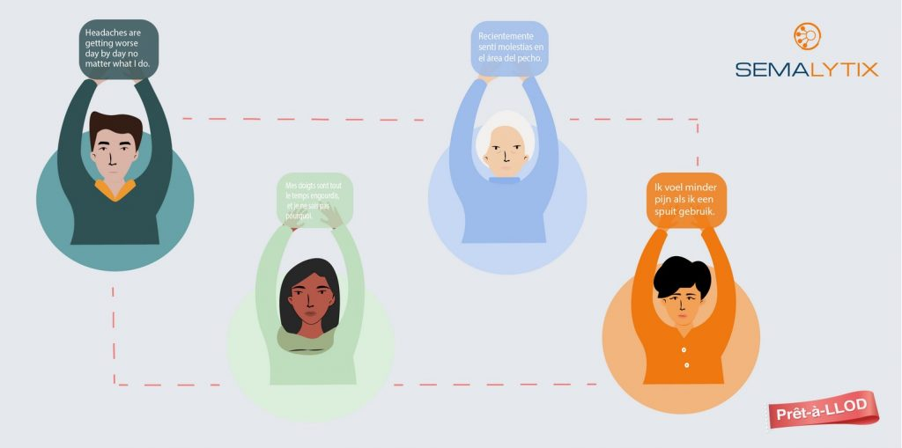

How Multilingual Text Analytics leverages Patient Centricity in Health Care
written by
on

Semalytix are providing meaningful insights from a variety of online
sources in order to find out what really matters to patients coping with
a particular disease.